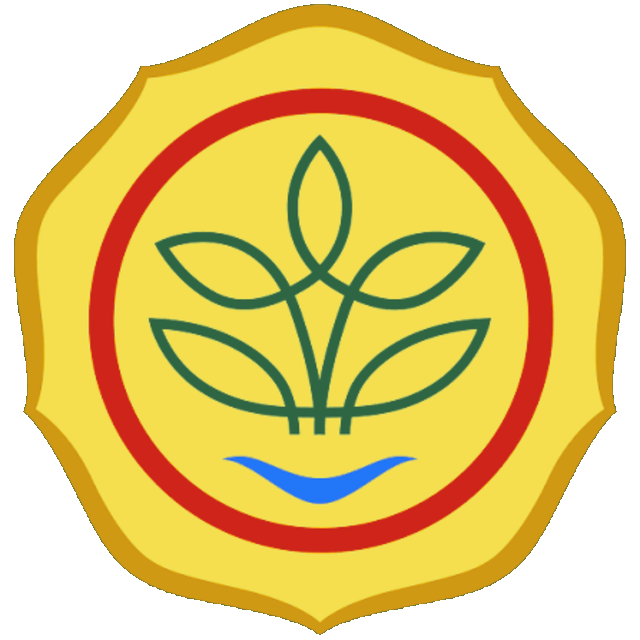

Dashboard Distribusi Benih
Pantau data pelaporan dan distribusi benih tanaman pangan.
Arsip & Dokumen
Pusat data, laporan, dan administrasi PSITP.
Semua File Drive
Jelajahi file di Google Drive tim dan buka langsung dari sini.

Akses langsung ke dokumen evaluasi dan layanan distribusi benih PPMPTP secara terpadu, cepat, dan transparan.
Pantau data pelaporan dan distribusi benih tanaman pangan.
Pusat data, laporan, dan administrasi PSITP.
Jelajahi file di Google Drive tim dan buka langsung dari sini.